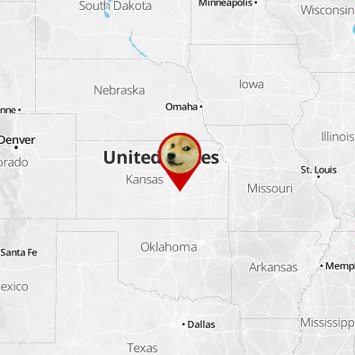

Pretio
Real-time Mapping of API Requests
About Pretio
We power reward-based advertising on mobile apps and FB gamesWhy this Project
- We wanted to start making visualizations of our data
- See patterns in geographic location
- Show traffic changes and shifts in popularity as they happen
- Investors like pretty graphs!
Where's the Data From?
- Mobile Ad Unit API
- Traffic from one of our US-only publishers
JSON Event
{
"@version": "1",
"@timestamp": "2014-09-20T02:11:57.681Z",
"type": "offers:served",
"offer": "3585b8da3f5011e4a11a12313f063e60",
"user_id": "xxxxxxxx-xxxx-xxxx-xxxx-xxxxxxxxxxxx",
"geoip": {
"country_code2": "US",
"country_name": "United States",
"city_name": "Louisville",
"latitude": 38.2542,
"longitude": -85.7594,
"timezone": "America/New_York"
},
"tags": ["geo"]
}
Quick Demo
Check it out at geo.pretio.inThe Map
- Uses Leaflet.js
- Custom icons
Server-Sent Events
- HTML5
- Stream data in real-time to the browser
Why not Websockets??
- Bidirectional, more flexibility
- Special server support needed
- SSE - lines of text from a long HTTP connection
- Auto reconnects!
Server-Sent Event Protocol
event: notification
data: hello world
event: location
data: {
data: "latitude": 38.2542,
data: "longitude": -85.7594
data: }
In the browser
// Connect to server
var source = new EventSource('server/path/to/events');
source.addEventListener('open', function(e) {
console.log('Connected!');
});
// Listen for "location" events
source.addEventListener('location', function(e) {
// We're sending data as JSON
var data = JSON.parse(e.data);
displayOnMap(data.latitude, data.longitude);
});
node.js
- So hot right now
- Event-driven JavaScript on the server
- Good for building "real-time" apps
The app
- Uses Express for rendering web pages
- Simple UDP server that receives events
Listening for UDP packets
var udpServer = udp.createSocket('udp4', function(msg, remote) {
console.log('Received message from ' + remote.address + ':' + remote.port);
try {
var data = JSON.parse(msg);
// Send out as event
events.emit('received', data);
} catch(err) {
console.error('Error parsing message: ' + err);
}
});
// Listen for UDP messages
udpServer.bind(PORT, '0.0.0.0');
Event Stream
app.get('/events', function(req, res) {
console.log('New client connected!');
res.status(200)
.set({
'Content-Type': 'text/event-stream',
'Cache-Control': 'no-cache',
'Connection': 'keep-alive'
});
// Listen for events from UDP server
events.on('received', function(data) {
// Send new "location" event to browser
res.write('event: location\n');
res.write('data: ' + JSON.stringify(data) + '\n\n');
});
});
Logstash

- A tool for parsing, rewriting and shipping logs
- Continuous pipeline of events
- Connects to almost everything (log files, queues, sockets, DBs, etc.)
- IP » Geo is built-in
Sample Logstash Config
input {
redis {
data_type => channel
host => "redis.server"
port => 6379
key => logs:offer_serving
codec => json
}
}
filter {
grok {
match => [ "[ip]", "%{IP:client_ip}" ]
}
geoip {
source => client_ip
}
}
output {
udp {
codec => json
host => "geo.pretio.in"
port => 3847
}
}
Read your web server logs!
input {
file {
path => "/var/log/apache/access.log"
}
}
filter {
grok {
pattern => "%{COMBINEDAPACHELOG}"
}
}
IP Geolocation
- Uses free MaxMind GeoIP database
- Not very accurate

Redis

- Advanced key-value datastore
- API Servers publish events to here
- Logstash picks them up
Multi-layered Rendering
Ideas
- Show server logs from your app
- Plotting real-time tweet data